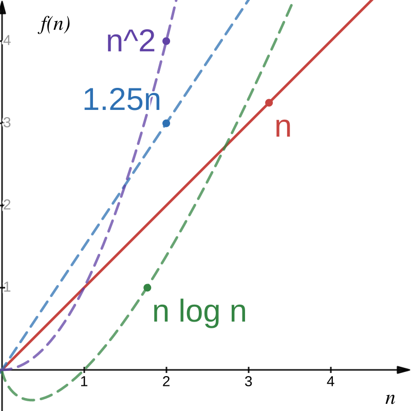

Slides © Grant Williams, CC BY-SA 4.0.
This is an open educational resource. Feel free to submit fixes, improvements, and new material here.
We talked about an example of a simple algorithm that was slow.
Specifically: concatenating multiple strings without being smart about where we start copying.
It was a little awkward to describe how slow it was. We had to calculate time units and we ended up with an expression like: \(T = {130*10000*(10000 + 1) \over 2}\)
We’re going to learn Big-O notation, so that we can express times like that more clearly.
You’ve probably heard of Big-O before, but there are other big and small letters, too: Big-O, small-o, Big-Ω, small-ω, and Big-θ*. We will eventually learn the whole family!
These conventions are called Bachmann-Landau notation after
its inventors.
** This is a lower-case omega. *** This is an upper-case theta. **** There is no small-θ
There’s nothing wrong with measuring how long an algorithm takes.
In fact: you should do that. It’s a good idea. Sometimes algorithms can be theoretically fast an practically slow.
For example, there are ways of multiplying matrices that are theoretically faster than the iterative way you learned, but they are only actually faster if the matrix is huge.
But there’s a simple problem with measuring algorithms empirically…
Other people don’t have your computer.*
Mathematicians don’t want to be like: “proof of running time: go get Alice’s computer, then run the algorithm ten times. It will take an average of 2 minutes when n = 10000, with a standard deviation of 1.1.”
Also, it’s more work to deterine how an algorithm scales when doing purely empirical measurement. You have to take multiple measurements to determine exponents, plus additional measurements to get a feel for how much they vary.
Doing high quality empirical benchmarks is surprisingly involved.
What we really care about is modelling how long an algorithm takes. Specifically, how it scales.
We would like a nice time function that lets us plug any input value we want and get a number that lets us compare to other input values, even if the units aren’t actual time.
We also don’t care about constant multiplication. Your computer may be 10 times faster than your phone; that doesn’t change the underlying speed of the algorithm
But we do care about some kinds of variable multiplication.
For example, consider this time function: \(T(n)={{130\over 2}n(n+1)}=65n(n + 1)\)
What matters more? The 65 at the beginning (the constant factor), or the \(n\)s (the variable factor)?
Well, let’s say n is 5: \(T(n)=65\times 5(5 + 1)=65\times 5(6)=65\times 30\)
Well 65 is bigger than 30, so it seems more important.
But what about when n gets big? Say, 10,000 like before.*
\(T(n)=65\times 10{,}000(10{,}000 + 1)=65\times 10^4(10^4 + 1)=65\times (10^8 + 10^4)\)
\(10^8 + 10^4\) is a lot bigger than \(65\). It’s roughly \(384{,}654\) times larger in fact.
And that ratio only gets more wild as n gets bigger.
*I moved the denominator of 2 under the 130 to combine the constant factors.
It doesn’t matter what constant we pick. If n gets big enough, it will matter more than the constant.
Even if the time function is something like \(T(n) = 1000 n\)
1000 is a large constant, but if n is, say, a million, it’s no longer the dominant one.
So instead of writing \(T(n)=65n(n + 1)\)
We could delete the constant factor \(T(n)=n(n+1)\)
And let’s distribute the \(n\) so we can see the exponents: \(T(n)=n^2+n\)
So now, we can clearly see that this is a quadratic function
It might make you uncomfortable to just remove constant factors like that.
But consider: every machine takes a different amount of time to do something.
If Alice’s computer takes 10 time units to copy a byte, then strcpy would have this time: \(T_{strcpy}(n)=10n\)
But let’s say Bob’s computer is faster: it only takes 2 time units: \(T_{strcpy}(n)=2n\)
This information is important, but it has nothing to do with the underlying algorithm.
We want to remove machine-specific information from the time function.
If it bothered you that we removed the constant factor, this is really going to bother you: we’re going to remove a whole variable term.
Consider again \(T(n)=n^2 + n\)
What matters more, \(n^2\) or \(n\)?
Obviously \(n^2\), but let’s really see how that plays out.
| n | \(n^2 + n\) | \(n^2\) | Ratio: \({n^2 + n} \over n^2\) |
|---|---|---|---|
| 1 | 2 | 1 | 2 |
| 10 | 110 | 100 | 1.1 |
| 100 | 10,100 | 10,000 | 1.01 |
| \(10^3\) | 1,001,000 | 1,000,000 | 1.001 |
| \(10^6\) | \(10^{12} + 10^6\) | \(10^{12}\) | 1.000001 |
It barely changes the outcome.
Again, if one algorithm took \(n^2 + n\) and another took \(n^2\), by the time you get to a large input, you can’t tell the difference.
But we don’t want to abuse mathematical notation and just randomly delete variables. Without a good mathematical foundation, that could let us derive erroneous statements.
The Big-O of \(f(n)\), written \(O(f(n))\) is the set of functions that are eventually bounded by \(f(n)\) if n is large enough and if we multiply by a large enough positive constant \(C\).
For example: - \(n \in O(n)\), because \(n \leq C \cdot n\) if we choose \(C=1\) (or 2, or 3, or anything \(\geq\) 1) - \(n \in O(2n)\), because \(n \leq C \cdot 2n\) if we choose \(C=1\) (or as small as \(0.5\)) - \(n \in O(.25n)\), because \(n \leq C\cdot 0.25n\) if we choose \(C \geq 4\) - \(n \in O(n \log n)\), because \(n \leq C\cdot n \log n\) if we choose any \(C \gt 0\), as n gets large - \(n \in O(n^2)\), because \(n \leq C \cdot n^2\) if we choose any \(C\gt 0\), as n gets large
It actually doesn’t matter what base the log is. The log functions with different bases all have constant ratios to each other.

Notice how, eventually all those functions get bigger than \(f(n)=n\).
This would be true even of a smaller linear function, because we can multiply by any constant.
Give an example of a function \(f(n)\), such that \(n^3 \in O(f(n))\)
That is, find a function \(f(n)\) where \(n^3 \leq C\cdot f(n)\) as n gets arbitrarily large.
All of these functions can be multiplied by a constant to make them \(\geq\) than \(n^3\)
Yes, even \({n^3 \over 2}\). We can multiply it by 2!
Give an example of a function \(f(n)\), such that \(n \notin O(f(n))\)
That is, find a function that is too small to have its big-O contain \(g(n)=n\).
No matter how much we scale these functions, eventually n will be larger than them.
Example: \(n \gt 100\sqrt{n}\) when \(n>10000\) \(n \gt 10000\sqrt{n}\) when \(n>1000000\) For a large enough n, for all \(C\), \(n \gt C\sqrt{n}\), so \(n \notin O(\sqrt n)\)
Give an example of a function \(f(n)\), such that \(f(n) \in O(n^3)\)
Yes, the functions can just be constants like \(1\).
The constant function \(f(n)=1 \in O(g(n))\) for any function \(g(n) \gt 0\)
Is \(n^2 \in O(n^2 - n)\)?
Actually yes. Let \(C = 2\). What happens to this when n gets big?
\(n^2 \leq 2(n^2 - n)\), distribute the 2 \(n^2 \leq 2n^2 - 2n\), subtract \(n^2\) from both sides \(0 \leq n^2 - 2n\) can this be made true for every n past a certain point? Add \(2n\) to both sides: \(2n \leq n^2\), we only care what happens when n is big, so we can divide (assume \(n>0\)) \(2 \leq n\)
So \(n^2 - n\) can be made to eventually bound \(n^2\) if we multiply it by a large enough constant. Once \(n \geq 2\), \(2(n^2 - n)\) will always be bigger than \(n^2\).
Intuitively, big-O tells us the upper bound of how long a process will take.
It specifically tells us that upper bound in a way that ignores constant factors or slower growing terms.
So it’s a mathematically rigorous way of removing unimportant details. “This algorithm runs in linear time (i.e., \(O(n)\))” conveys a lot of information without bogging down the reader with computer specific information or meaningless time blips.
Okay, let’s get more rigorous. Our definition was good before, but not quite good enough for proofs.
\[f(n) \in O(g(n)) \iff \exists C \gt 0, \exists n_0 \in ℕ,\forall n \geq n_0, f(n) \leq C\cdot g(n)\]
In English: “f is in the order of g”, is equivalent to saying that there are a pair of numbers: \(C\) and \(n_0\) which must be large enough so that \(C\times g(n)\) is bigger than \(f(n)\) for every choice of \(n\) that is larger than \(n_0\).
Note: We’re assuming that f and g are functions that return positive values (because they represent times). If you truly wish to allow f to return even negative numbers, you must put absolute value bars around it. We don’t need to worry about this in the study of algorithms, but other fields use this notation too.
It’s a big gnarly definition. Let’s think about it.
Anytime someone proves \(f(n) \in O(g(n))\) constructively, they must: - Find the scaling factor \(C\) - Find the starting point \(n_0\) - Prove that for every natural number starting at \(n_0\) and getting as big as you want, that \(f(n) \leq C\cdot g(n)\)
We’ll look at how to write one of these proofs soon, but first, let’s assume someone has done the hard work for us.
Yes, it is.
But how do we prove it?
[What do you think?]
What does it mean for \(A \subseteq B\)?
It means \(\forall x \in A, x \in B\).
Another way of putting it: \(\forall x \in U, x \in A \implies x \in B\)
What kind of elements are we interested in? What are the elements of \(U\)? Functions. \(O(f(n))\) is a set of functions \(f:N \to R^+\)
Therefore, we need to show: \[\forall f: N \to R^+, f \in O(n) \implies f \in O(n^2)\]
How do we prove \(\forall f: N \to R^+, f \in O(n) \implies f \in O(n^2)\)?
If your goal starts with \(\forall\), a typical way to start your proof is by saying “suppose”.
To make it easier to track, let’s track the goal, and the proof so far, at the same time.
Proof: empty Goal: \(\forall f: N \to R^+, f \in O(n) \implies f \in O(n^2)\)
Now we “suppose” to “peel off” the forall at the beginning of the goal.
Proof: “Suppose we have a function \(f: N \to R^+\)” goal: \(\cancel {\forall f: N \to R^+}, f \in O(n) \implies f \in O(n^2)\).
So, how do we prove \(f \in O(n) \implies f \in O(n^2)\)?
So how, do we prove that \(P \implies Q\)?
We have three options: 1. Assume that \(P\) (aka, the hypothesis) is true, and show that you can prove \(Q\) (the conclusion). This is a direct proof. 2. Prove the contrapositive: \(\lnot Q \implies \lnot P\). This is a kind of indirect proof, and it is sometimes considered less satisfying than if we could prove \(P\implies Q\) directly. 3. Show that \(P\) is false. (i.e., \(P \implies Q\) is vacuously true)*. Also indirect.
#3 won’t work, because we have no reason to believe \(f \notin O(n)\). #2 would work but indirect proofs are less “enlightening”**. Let’s do #1.
** Another footnote: see appendix B to understand why we like direct, “constructive” proofs, especially in computer science.
Proof so far: “Suppose we have a function \(f: N \to R^+\)” Goal: \(f \in O(n) \implies f \in O(n^2)\).
Okay, so now we “suppose” again. “Suppose” peels off an implication the same way that it peels off a “\(\forall\)”.
Proof so far: - Suppose we have a function \(f: N \to R^+\) - Suppose that \(f \in O(n)\)
Goal: \(\cancel {f \in O(n) \implies} f \in O(n^2)\)
Now we have a hypothesis we can use: \(f \in O(n)\). Let’s use it: apply the definition of \(O\).
Recall the definition of big-O: \[f(n) \in O(g(n)) \iff \exists C \gt 0, \exists n_0 \geq 0, \forall n \geq n_0, f(n) \leq C\cdot g(n)\]
And recall that our proof so far looks like this: “Suppose we have a function \(f: N \to R^+\) and suppose there is some \(f \in O(n)\)”
Implications are the logical version of functions*. We can “call” our definition on \(f \in O(n)\) and replace it with the other side of the \(\iff\)
So use that big \(\iff\) at the top on \(f(n) \in O(g(n))\), but replace \(g(n)\) with just \(n\).
So now, we can use this fact: \(\exists C \gt 0, \exists n_0 \geq 0, \forall n \geq n_0, f(n) \leq C\cdot g(n)\)
How does that help?
* It’s not a coincidence that F: P ⇒ Q looks like f : N → R. Functions are isomorphic with implications. Search for the “Curry-Howard correspondance” if this is interesting to you.
Now we have a \(C\) and \(n_0\) to work with. Let’s expand the definition in the goal, too.
Proof so far: - Suppose we have a function \(f: N \to R^+\) - Suppose \(f \in O(n)\). - Applying the definition of big-O to both the above hypothesis and goal, we derive \(\exists C \gt 0, \exists n_0 \geq 0, \forall n \geq n_0, f(n) \leq C\cdot n\)”
Goal so far: \(\cancel{f \in O(n^2)} \exists C \gt 0, \exists n_0 \geq 0, \forall n \geq n_0, f(n) \leq C \cdot n^2\)”
We deal with \(\exists\) and \(\forall\) differently when they’re in our “context”, aka “set of assumptions” than when they are in the goal.
When an \(\exists\) is in our set of assumptions, we can give it a name by also saying “suppose”, or just break it off the proposition.
So we say “suppose” to prove a \(\forall\) in the goal, and we say “suppose” to break off a \(\exists\) in a hypothesis.
Let’s break apart the assumption in our proof:
Proof so far: - Suppose we have a function \(f: N \to R^+\) - Suppose \(f \in O(n)\). - Apply the definition of big-O to both the above hypothesis and goal, we derive \(\exists C \gt 0, \exists n_0 \geq 0, \forall n\geq n_0, f(n) \leq C\cdot n\)” - Suppose we have a \(C \gt 0\), \(n_0 \geq 0\) - We now have \(\forall n \geq n_0, f(n) \leq C \cdot n\)
Goal so far: \(\exists C \gt 0, \exists n_0 \geq 0, \forall n \geq n_0, f(n) \leq C \cdot n^2\)”
Remember how saying “suppose” in our proof removed a \(\forall\) from the goal? To remove a \(\exists x\) from the goal, we have to say “choose \(y\) for x”. But that requires us to actually pick a value \(y\)…what should we pick?
Remember, once we pick something, our goal will be to show \(\forall n \geq n_0', f(n) \leq C' \cdot n^2\), for some \(C'\)
And we currently have an assumption that \(\forall n \geq n_0, f(n) \leq C \cdot n\)
What value of \(C'\) should we pick so that \(f(n) \leq C \cdot n \leq C' \cdot n^2\)?
Honestly, \(n^2\) grows much faster than \(n\), so we can pick pretty much anything \(\gt 0\). Let’s pick \(C\) so the \(Cs\) cancel out when you replace the \(C'\) with it. As for \(n_0'\), we have to pick \(n_0\), because there’s a hypothesis that says \(\forall n \geq n_0\) that we want to use. We could have chosen \(n_0 = 0\) at the very beginning instead.
Proof so far: - Suppose we have a function \(f: N \to R^+\), \(f \in O(n)\). - Apply the definition of big-O to \(f\in O(n)\). - Suppose \(C \gt 0\), $n_0 $, then \(\forall n \geq n_0, f(n) \leq C \cdot n\), We must show \(\exists C' \gt 0, \exists n_0' \geq 0, \forall n' \geq n_0', f(n') \leq C' \cdot n'\)* - Choose \(C'=C\) and \(n_0'=n_0\)
Goal: \(\cancel{\exists C' \gt 0, \exists n_0',} \forall n' \geq n_0, f(n') \leq C \cdot n^2\)
See how we replaced the \(C'\) and the \(n_0'\) in the goal with \(C\) and \(n_0\)? Now what to do?
* We added “primes” (the quotes after the variable names) to distinguish the variables in the goal
That’s right, “suppose”! \(\forall n' \geq n_0, P(n)\) is shorthand for \(\forall n, n \geq n_0 \implies P(n)\). We can handle both the “\(\forall\)” and the \(n \geq 0\) hypothesis by saying “suppose”.
Proof so far: - Suppose we have a function \(f: N \to R^+\), \(f \in O(n)\). - Apply the definition of big-O to \(f \in O(n)\) to obtain \(C\) and \(n_0\). - Suppose \(C \gt 0\), \(n_0 \geq 0\), then \(\forall n, n \geq n_0 \implies f(n) \leq C \cdot n\), We must show \(\exists C' \gt 0, \exists n_0' \geq 0, \forall n' \geq n_0', f(n') \leq C' \cdot n'\)* - Choose \(C'=C\) and \(n_0'=n_0\), and suppose we have some \(n'\), \(n' \geq n_0\)
Goal: \(\cancel{\forall n' \geq n_0,} f(n') \leq C \cdot n^2\)
* Here I’m repeating the goal so that the “choose” doesn’t come out of nowhere.
Notice that we have some natural number named \(n'\) in our context.
And notice that we have an assumption: \(\forall n, n \ge n_0 \implies f(n) \leq C \cdot n\)
The “\(\forall\)” in the assumption means that we can apply it to any natural number we want.
Apply it to \(n'\): \(n' \geq n_0 \implies f(n') \leq C \cdot n'\)
Is it true that \(n' \geq n_0\)? Yes, we supposed it last slide. That’s why we picked \(n_0' = n_0\). If it were not the case that \(n \geq n_0\), we would not be allowed to apply this implication.
So now the implication gives us the hypothesis: \(f(n') \leq C \cdot n'\)
Now, can we finally show that \(f(n') \leq C \cdot (n')^2\).
How?
We already have that \(f(n') \leq C \cdot n'\), and it’s true that \(C \cdot n' \leq C \cdot (n')^2\), so, transitively, \(f(n') \leq C \cdot n' \leq C \cdot (n')^2 \implies f(n') \leq C \cdot (n')^2\), which was the goal
You can put the cool tombstone at the end: ▯, or write *QED** if you’re fancy.
* QED is an acronym which stands for “quod erat demonstratum”, which means “which was to be demonstrated” in Latin.
Goal: \(\forall f: N \to R^+, f \in O(n) \implies f \in O(n^2)\) - Suppose we have a function \(f: N \to R^+\), \(f \in O(n)\). Goal: \(f \in O(n^2)\) - Apply the definition of big-O to \(f \in O(n)\) and \(f \in O(n^2)\) Suppose we have \(C \gt 0\), \(n_0 \geq 0, \forall n, n\geq n_0 \implies f(n) \leq C \cdot n\) Goal: \(\exists C' \gt 0, \exists n_0' \geq 0, \forall n', n'\geq n_0' \implies f(n') \leq C' \cdot n'\) - Choose \(C'=C\) and \(n_0'=n_0\), and suppose we have some \(n'\), \(n' \geq n_0\) Goal: \(f(n') \leq C \cdot (n')^2\) - Apply our assumption \(\forall n, n\geq n_0 \implies f(n) \leq C \cdot n\) to \(n'\). We have that \(n' \geq n_0\), so the rule applies. We derive \(f(n') \leq C \cdot n'\), from which the goal, \(f(n') \leq C \cdot (n')^2\) follows by transitivity of \(\leq\). ▯
We’ve already seen how to prove things in discrete math, but you may not have had to do it too many times since then.
Once you see the mechanical nature of proofs, and how we say things like “suppose” in the proof to remove a hypothesis or “\(\forall\)” in the goal, I hope it will feel more comfortable.
It really is like writing a computer program. In fact, when Donald Knuth was introducing computer programming, he said it was like writing a proof!
If you’re struggling, I really recommend thinking about proofs in terms of “what is the proof so far” and “what is the goal so far”. This is how proof assistants like Roqc work, so if you get used to this paradigm, you’ll find it easy to write formal proofs if you want.
Everything you do in the proof either modifies an assumption (i.e., something we supposed) or modifies the goal (i.e., “this follows from”).
Instead of trying to hold the whole proof in your brain, try to ask yourself: “okay, the proof looks like \(\forall x \in Z, \ldots something\)”, so the next step is to say “suppose we have some \(x \in Z\)” and that removes the “\(\forall x \in Z\) from the proof.
Just focus on one step at a time. Some steps do seem to require creativity, but you can often solve them with trial and error. Your intuition will improve with practice.
Proving \(\lnot P\) is fundamentally the same as proving \(P \implies False\), so you can start by supposing \(P\), and then deriving a contradiction.*
You can also invert the proposition and prove the inverse is true. Here is how quantified propositions get inverted: 1. \(\lnot \exists x, P \implies \forall x, \lnot P\) 2. \(\lnot \forall x, P \implies \exists x, \lnot P\)
(Note: the second one relies on non-constructive logic, so it’s not as convenient with proof assistants, but we don’t have to restrict ourselves in this class)
* We can think of “not P” as saying “there cannot be a proof of P”. So if you had a proof of P, it would necessarily cause a contradiction.
Sometimes it’s easier to work backwards than forwards. If I have a goal to show \(Q\), and I have an assumption \(P \implies Q\), I can say in my proof: “\(Q\) follows from \(P\)”, and now my goal is to prove \(P\).
I can also write: \(Q \impliedby P\) which means the same thing: I used to want to prove \(Q\), but now it’s enough to prove \(P\), because we know that if I have a proof of \(P\), I can get \(Q\).
Just like solving a maze, it’s sometimes way easier to go backwards. Appendix E shows an example (the quadratic formula) where going backwards makes it clear what you have to do, whereas going forwards requires you to be creative.
Over time, you’ll naturally get more comfortable with making larger leaps, and your proofs will get shorter.
Follow the long-form proof/goal method we’ve been using until you feel confident.
Be sure to check your work: using my worked examples when they’re there, office hours/email, or AI for convenience.
Let’s check the assignments to see if one is ready for us!
It gets a little tedious proving facts about big-O. It’s nice to have simple rules to apply.
For example, suppose we have some algorithm that is recursive. For example, the running time of merge-sort looks like this:
\(T_{ms}(0)=1\) \(T_{ms}(n)=2T_{ms}({n \over 2}) + f(n)\) where \(f(n) \in O(n)\)
We’ll show how this is derived next module, but notice how inconvenient it is to always say “\(f\), where \(f\) is an element of the big-O of …”
It would be much nicer to just write this: \(T_{ms}(n)=2T_{ms}({n \over 2}) + O(n)\)
And that’s, in fact, what we do.
First, instead of saying “\(f \in O(g(n))\)”, we say “\(f = O(g(n))\)”
This is an abuse of notation. It does not mean “\(f\) is the order of \(g(n)\) (i.e., a set)”. It means “\(f\) is some function in \(O(g(n))\).
You’ve probably seen statements like \(f = O(n^2)\) online. Hopefully this makes it clear that \(O(n^2)\) really is a set, but we usually prefer to treat the function as a member of that set.
Why do we abuse the notation? Because it’s nice to say \(O(n) + O(n^2) = O(n^2)\) and we can only do that if \(O(n)\) is treated as a member of a set instead of a set.
So here’s the rule: - When there’s one big O and it’s the entire right hand side: “\(f(n) = O(g(n))\)” means “\(f(n) \in O(g(n))\)” - When it’s a term or a factor: “\(O(n) + O(n^2) = O(n^2)\)” means the \(O(g(n))\) terms are actually elements of that \(O\)’s set.
So \(O(n) + O(n^2) = O(n^2)\) from now on really means \(f + g \in O(n^2)\) where \(f \in O(n)\) and \(g \in O(n^2)\).
There are two useful rules we will apply frequently: 1. \(O(f(n)) + O(g(n)) = O(f(n) + g(n))\) 2. \(O(f(n)) \times O(g(n)) = O(f(n) \times g(n))\)
Remember that \(O(f(n))\) and \(O(g(n))\) are really members of a set in the above rules. Not the set itself. But \(O(f(n)+g(n))\) and \(O(f(n)\cdot g(n))\) are the sets themselves.
Practice exercise: Prove these. Choose an \(n_0\) that is guaranteed to be larger than the \(n_0\) for either \(f\) or \(g\), and choose \(C\) that is guaranteed to be larger than either \(f'(n) + g'(n)\) or \(f'(n) \cdot g'(n)\) for any \(f' \in O(f(n))\) and \(g' \in O(g(n))\)
Notice how the higher degree term swallows the lower degree term with addition.
Notice how that’s not the case with multiplication.
We cannot combine \(O\) over subtraction or division.
\(O(n^2) - O(n^2)\) looks like \(0\), but it’s not true for \((n^2 - n) - n^2\)! Likewise for division.
Be very careful going backwards. It’s sometimes reasonable to say \(O(n + m) = O(n) + O(m)\), but you can get in trouble doing this.
Later we will see recursive time-functions where adding a constant factor to one expression ends up adding a linear factor to the whole function.
In that case, It’s wrong to use \(O\) to arbitrarily generate terms like this: \(O(n) = O(n + 1) = O(n) + O(1)\)
This is even more wrong: \(O(n)=O(n^2)=O(n^2 + n)= O(n^2) + O(n)\)
Remember that we are abusing notation here. Try to keep track of when \(O(f(n))\) is a set versus a function in the set.
One more rule: if something always takes the same amount of time, we say it is \(O(1)\)
What if it takes \(1000\) time units?
Then choose \(C = 1000, n_0 = 0\), \(1000 \leq 1000 \cdot 1\) Therefore \(1000 = O(1)\)
It was a practice exercise to prove this earlier, but I wanted to re-iterate it.
Now we know that, if someone proves that an algorithm takes time \(t(n) = O(g(n))\), we have a vague idea of how much time it will take at worst.
\(O\) gives us an upper bound on its runtime.
Hopefully you can see why it’s useful. There are also \(Ω\) for lower bound, and \(Θ\) for both lower and upper.
Okay, enough abstract math. Let’s look at a real algorithm!
Insertion sort is a simple, but surprisingly valuable sorting algorithm.
First, let’s remind ourself of its code:
void swap(int* a, int* b);
void ins_sort(int* arr, size_t n) {
for (size_t i = 1; i < n; i++)
for (size_t j = i; 0 < j && arr[j] < arr[j - 1]; j--)
swap(arr + j - 1, arr + j);
}Note: this can be slightly sped up by avoiding unecessary copies. Think about what swap does and expand it. Could you optimize the function? Answer is in the github. ** “arr + i” is equivalent to “&arr[i]”. We’re doing pointer math to get the ith and jth elements of arr.
Insertion sort tracks which part of the array is sorted and which part isn’t. \(i\) points to the first index of the unsorted part.
Suppose we have an array like this 4, 7, 5, 1, 3, 2, 6
We split it into a sorted part and an unsorted part: 4 |
7, 5, 1, 3, 2, 6 There are two arrays: [4] and
[7, 5, 1, 3, 2, 6] The first array is sorted. Singleton
arrays are always sorted.
Consider the second loop:
for (size_t j = i; 0 < j && arr[j] < arr[j - 1]; j--)
swap(arr + j - 1, arr + j);This loop moves the unsorted element to the left until it is no longer out of order.
Starting with [4] and [7, 5, 1, 3, 2, 6],
this loop will examine 4 and 7. They are
in-order, so it will not swap them.
Then the loop will run on [4, 7] and
[5, 1, 3, 2, 6] 7 and 5 are out of order, so they will be
swapped. 4 and 5 are in order, so we stop.
Then the loop will run on [4, 5, 7] and
[1, 3, 2, 6] Practice: finish the procedure. Follow
the for-loop as you do it.
Every time the inner loop finishes, one more element is in the correct place, and the sorted list grows by one.
Eventually the sorted list includes the whole list.
But how do we know? Can we prove it more rigorously?
Now it’s time for the big one! We have to use induction.
We’ll review it first, but…
What is induction? Can anyone tell me?
Natural numbers are a useful, simple datatype that is inductive. An inductive data type has a finite number of constructors.
Wait, constructors? Remember programming language design: a datatype consists of a number of constructors. Natural numbers have two: 1. \(0\) 2. \(\forall n \in N, n \implies n + 1\) (i.e., given a natural number, add 1 to it to get the next one)
Because natural numbers are inductive, there is an algorithm that gives you a way to prove propositions about them. That is, propositions of the form, \(\forall n \in N, P(n)\). This algorithm is called an “inductive principle”.
There are many inductive principles for each inductive datatype. The most basic inductive principle for natural numbers is called weak induction*.
Weak induction is a proof algorithm. If you give it two proofs, it will spit out a proof of \(P(n)\) for any n.
Here are the proofs we must give it: 1. \(P(0)\) 2. \(\forall n, P(n) \implies P(n + 1)\)
These proofs each correspond to one of the constructors of natural numbers.
* yes, there is also “strong induction”. We will use it when we start working with trees and divide and conquer algorithms.
Because this (half-functional psuedocode) is the function that weak induction requires*
P(n) weak_induction(P, n, P(0) base, P(forall n, P(n) -> P(n + 1)) ind) {
case n of
| 0 => return base
| n' + 1 => // n' is the number before n
n'_proof = weak_induction(n', base, ind); // get proof for P(n -1)
return ind(n, n'_proof); // use proof for P(n - 1) to get P(n)
}This is a proof machine. If you say, “give me the proof that \(P\) is true for \(0\), it spits out \(P(0)\). If you say,”give me the proof of \(P(1)\)“, it recursively gets the proof of \(P(0)\) (the base case), then it applies the inductive proof to generate \(P(1)\). Works for any \(n\).
* In a proof assistant like Roqc, weak induction is literally a function. It has source code. You can write your own principle of induction and use that instead, as long as it is provably total. Again, there are times when other inductive principles are more convenient, so we will see some.
void ins_sort(int* arr, size_t n) {
for (size_t i = 1; i < n; i++)
for (size_t j = i; 0 < j && arr[j] < arr[j - 1]; j--)
swap(arr + j - 1, arr + j);
}ins_sort(arr, n),
arr[0..n) will be sorted.arr[0..0) is sorted.arr[0..n), it
sorts arr[0..n+1)Notation: arr[a .. b) means the range
starting at a and ending at b - 1 inclusive.
This is called a “half-open” interval. A closed interval will be written
arr[a..b], which means b is included in the
interval.
We were able to show \(P(0)\) pretty quickly, but \(P(n) \implies P(n+1)\) is more involved.
We want to “wrap” our loop with a property. We want that if \(P(n)\) is true before entering the loop, then \(P(n+1)\) will be true after.
Usually this means something like: “if arr[0..n) is
sorted … one iteration happens … now arr[0..n+1) is
sorted
It’s important that the first part stay true before the loop, and
after each iteration of the loop. It doesn’t help us if
arr[0..n) stops being sorted, because then we’re not making
progress towards arr[0..n+1).
This kind of property, one that is true before a loop and after each iteration, and therefore also immediately after the loop, is called a loop invariant.
void ins_sort(int* arr, size_t n) {
// base case: arr[0..1) is sorted
// invariant: arr[0..i) is sorted
for (size_t i = 1; i < n; i++)
for (size_t j = i; 0 < j && arr[j] < arr[j - 1]; j--)
swap(arr + j - 1, arr + j);
// now arr[0..i + 1) is sorted (we hope)
}We clearly want the array to be sorted after the loop. But there’s a
pesky loop inside. It needs to have this property:
arr[0..i) is sorted \(\implies\) arr[0..i + 1) is
sorted.
for (size_t j = i; 0 < j && arr[j] < arr[j - 1]; j--)
swap(arr + j - 1, arr + j);This inner loop swaps elements into place, but it’s a little complicated.
It has two termination conditions: 1. either it reaches the beginning of the array… 2. …or it finds that arr[j] is in the right place.
Remember, we want: arr[0..i) is sorted \(\implies\) arr[0..i + 1) is
sorted.
Is there any way to relate that to the new variable,
j?
for (size_t j = i; 0 < j && arr[j] < arr[j - 1]; j--)
swap(arr + j - 1, arr + j);j partitions the array between sorted and unsorted.
Even with all this swapping: arr[0..j) is still sorted
because we don’t access \(\lt\) j. And,
the values from arr[j + 1..i) were sorted before, and
remain sorted after swap. So these can be invariants.
The only issue is arr[j-1] ++ arr[j], which is not
sorted. But after the swap, that particular pair will be sorted.
Notation: ++ means concatinate. It’s
not a C operator, but the proofs would be much jankier without a nice
operator like that.
// Pre: arr[0..i) is sorted
// I: arr[0..j) is sorted /\ arr[j .. i + 1) is sorted
for (size_t j = i; 0 < j && arr[j] < arr[j - 1]; j--)
// arr[0..j) is sorted /\ arr[j] < arr[j - 1] < arr[j + 1..i)
// arr[0..j) < arr[j + 1..i + 1)
swap(arr + j - 1, arr + j);
// arr[0..j - 1) is sorted, arr[j - 1..i + 1) is sorted
// ^^^^^^^^^^^^^^^^^^^^^^ important bit
// After termination: if arr[j] >= arr[j - 1], then
// arr[0..j-1] sorted => arr[j..i + 1) sorted => arr[j-1] <= arr[j] =>
// arr[0..i + 1) is sorted. If j = 0, the same applies. Notice that after each swap, the right partition gets larger and the left partition gets smaller. Eventually, the left partition is empty.
Our termination proof shows that no matter which way the loop terminated, we can always show that the whole array up to and including \(i\) is sorted.
void ins_sort(int* arr, size_t n) {
// base case: arr[0..1) is sorted
// I: arr[0..i) is sorted
for (size_t i = 1; i < n; i++)
//I: arr[0..j) is sorted, arr[j+1..i) is sorted, arr[0..j) < arr[j+1..i]
for (size_t j = i; 0 < j && arr[j] < arr[j - 1]; j--)
swap(arr + j - 1, arr + j);
// => arr [0..j - 1) sorted, arr[j..i + 1) sorted
// now arr[0..i + 1) is sorted
}Get ready for a big, gnarly proof by induction!
Goal: \(\forall n\in N, a \in\)
int[], after ins_sort(a, n), a is
sorted. Proof: By induction on \(n\) -
Goal: show after
ins_sort([], 0), [] is sorted Proof: the loop is skipped and [] is always sorted. - Goal: show $\forall a \in$int[], afterins_sort(a,
n)is sorted $\implies$ afterins_sort(a, n +
1)is sorted (i.e., if the firstncharacters are sorted, then+1th will be too) Proof, by loop invariant (it showsarr[0..n)sorted $\implies$arr[0..n+1)`
sorted)
Beware of bugs in the above code; I have only proved it correct, not tried it. - Donald Knuth
“Awesome, we proved it! That means I don’t need unit tests!”
Not quite: - Our proof could be formalized incorrectly. I.e., we picked the wrong goal. - We could have made a logic error in the proof. - We could have made a typo in the code - Some aspect of C semantics may be different than we expect. - I had bugs in both my proof and code making these slides.
Check the code on the GitHub.
Go to code/mod2.c.
I’m using a unit testing framework based on minunit.
It takes like, 10 lines of code to add unit testing. Just copy paste.
Feel free to copy my unit testing solution for your assignments.
“Then why bother with proofs?”
Proofs force you to deeply understand the code.
Once you’ve proven it, even if the proof is wrong, when you step through the code with a debugger, it will be much easier to understand where the error is (and you can use the proof to generate asserts).
The deep understanding you get from proofs is tremendously valuable.
It’s an awful feeling to go around tweaking signs and flipping inequalities to try to find the bug. Focus on understanding the inductive reasoning instead.
One more thing: most competitive and technical interview problems start from a proof.
This is selection sort:
// finds the index of the minimum element within first n characters
int arg_min(int* arr, size_t n);
void sel_sort(int* arr, size_t n) {
if (n == 0) return;
for (int i = 0; i < n; i++) {
int min_i = i + arg_min(arr + i, n - i); // add i, because ptr offset
swap(arr + min_i, arr + i);
}
}arr[i] is swapped with the minimum value of the array to the right.
Apply the same analysis we did to insertion sort. You’ll need to
implement arg_min, and prove that it works, too. If you use a loop,
consider that from [0..i), your variable storing the max
index is correct.
Look up bubble-sort. Isn’t it pretty similar to insertion sort?
Implement it, then prove that your implementation is correct.
How do we determine the big-O of insertion sort?
First, we need to estimate its time. Let’s look at the code and try to figure out how much time it takes.
The loops take a variable amount of time depending on the input. But there’s one thing that always takes the same amount of time: swap.
Why?
Here’s a reasonable implementation of swap. (You may know the fancier version using xor, but it’s not faster and it has an edge case):
void swap(int* i, int* j) {
int t = *i;
*i = *j;
*j = t;
}This is what it compiles into with clang, target x64, with -O2:
swap: mov eax, dword ptr [rdi]
mov ecx, dword ptr [rsi]
mov dword ptr [rdi], ecx
mov dword ptr [rsi], eax
retThe swap is 5 assembly instructions.
Those are just moves and a return. Specifically 1-2 micro-op moves, and a 1-3 micro-op return. Two dependencies. This whole thing will typically take a few cycles or so.
It takes a few cycles no matter what inputs it gets. It’s not like swapping big numbers is slower than swapping small ones.
Therefore we say that swap takes constant time.
There are two common ways we can bound a simple operation, like a move or add. 1. It’s contant time. 2. It depends on how big it is.
Both of these assumptions make sense. If \(x\) and \(y\) are two registers, then \(x + y\) takes constant time. A couple of cycles at most. And it doesn’t depend on the values.
But if \(x\) and \(y\) are megabytes long Bigints, it depends. They would have to be broken down into a multi-step addition with carries. It would take an amount of time propositional to the length of the shorter int.
We have to choose a model for how much time operations will take, and our choice will affect the \(O\).
We can choose the RAM model, which basically states that every time you access RAM (or a register), that counts as 1 operation. Virtually every assembly instruction does this a constant number of times, so it’s reasonable to say \(O(1)\) ops per instruction.
Addition is \(O(1)\), because it takes 2 RAM accesses (one for each operand), and \(O(2) = O(1)\).
Alternatively, there’s the bit model. This treats every number as if it were an array of bits, and each bit modified is one op. This means adding a number to itself is \(O(\lg n)\), because the number \(n\) requires at least \(log_2(n)\) bits.
There is a time and a place for both, but in this class we will be using the RAM model unless otherwise noted.
Put simply: we will treat each assembly instruction as \(O(1)\) (aka “constant time”)
This will make it easy to compute \(O\), and make it pretty accurate to the performance on a desktop computer for reasonable values for \(n\).
However, if \(n\) doesn’t describe the length of an array, but rather a really large integer (e.g., in RSA encryption), the bit length model ends up being a better representation of how the algorithm scales. There are reasons to use either one.
We saw that swap was \(5\) assembly instructions in sequence. \(O(1) + O(1) + O(1) + O(1) + O(1) = O(5) = O(1)\).
So lets annotate how long insertion sort takes with that knowledge:
void ins_sort(int* arr, size_t n) { // O(?)
for (size_t i = 1; i < n; i++) // O(?)
for (size_t j = i; 0 < j && arr[j] < arr[j - 1]; j--) // O(?)
swap(arr + j - 1, arr + j); // O(1)
} for (size_t i = 1; i < n; i++)How many times will this run?
[Class]
It will run exactly \(n-1\) times. \(n-1=O(n)\)
Does that mean this algorithm is \(O(n)\)? No!
It means that the outer loop multiplies the \(O\) of the inner loop by a factor of \(O(n)\).
So it’s at least \(O(n)\), but in fact, it’s worse than that.
What about the inner loop?
for (size_t j = i; 0 < j && arr[j] < arr[j - 1]; j--) // O(?)
swap(arr + j - 1, arr + j); // O(1)\(O\) is about upper bounds, so we need to ask: “what is the most possible number of times this loop will run?”
It would be if arr[j] is smaller than anything in
arr[0..j), so it has to swap i times.
Therefore, this loop will run, at most, \(i\) times. It is \(O(i)\).
Now we can finish annotating the function:
void ins_sort(int* arr, size_t n) { // O(?)
for (size_t i = 1; i < n; i++) // O(n)
for (size_t j = i; 0 < j && arr[j] < arr[j - 1]; j--) // O(i)
swap(arr + j - 1, arr + j); // O(1)
}So it runs an outer loop \(O(n)\) times, and an inner loop \(O(i)\) times. Does that mean it runs \(O(ni)\) times?
Technically yes, but remember, \(i\) depends on \(n\). What is the largest \(i\) could be? \(i = O(n)\)
We don’t want an extra variable unless they are independent. We’ll talk about how to deal with multiple independent variables next module!
I will not give full credit to \(O(ni)\), because it forces the reader to know what \(i\) is, which they won’t know unless they read the source.
The Bachmann-Landau statements you make must be based only on inputs to the algorithm. They should not depend on computations internal to the algorithm. The reader shouldn’t have to know about \(i\) to understand the runtime bound.
Can we really just eliminate \(i\) like that? Yes.
\[ \sum_{i=1}^{n-1}\sum_{j=0}^{i - 1}1=\sum_{i=1}^{n-1}i={n(n-1) \over 2}={n^2-n \over 2} \]
Half of a quadratic function is still a quadratic function.
So we’re not missing anything important. It is accurate and reasonable to say that insertion sort is \(O(n^2)\). We don’t need or want to say \(O({n^2 - n \over 2})\) because that \(=O(n^2)\)
However, if you’re comparing two \(O(n^2)\) algorithms, that factor of \(1\over 2\) might empirically matter. It’s still important, and an algorithm that is \(2\) times faster is still \(2\) times faster even if the big-\(O\) is the same. That’s great! But when reporting the big-\(O\), we omit it.
void ins_sort(int* arr, size_t n) { // O(?)
for (size_t i = 1; i < n; i++) // O(n)
for (size_t j = i; 0 < j && arr[j] < arr[j - 1]; j--) // O(n)
swap(arr + j - 1, arr + j); // O(1)
}We can now say this code is \(O(n)\times O(n)\times O(1)=O(n \times n \times 1)=O(n^2)\)
Because the outer loop runs \(O(n)\) times, and the inner loop runs \(O(n)\) times, the whole thing runs \(O(n^2)\) times.
So that’s it, \(n^2\) is an upper bound on the time of insertion sort.
But what about this?
for (int i = 0; i < n; i++) // O(n)
constant_time_thing();
for (int i = 0; i < n; i++) // O(n)
constant_time_thing();[Class?]
for (int i = 0; i < n; i++) // O(n)
constant_time_thing();
for (int i = 0; i < n; i++) // O(n)
constant_time_thing();The code runs in sequence. So this is \(O(n) + O(n) = O(n + n) = O(2n) = O(n)\)
Code in sequence adds the time, code nested in loops multiplies the time.
Earlier we stated that insertion sort had some nice properties.
But it looks awful. Insertion sorting an array of a million elements would take a trillion time units!? Impossible.
Think about this for next time: what if the array is already almost sorted. Then what happens to insertion sort?
And it turns out: this is a very common occurence!
So even though this seems like an academic exercise: you’ve actually learned to analyze a very useful algorithm.
Footnote: selection sort still sucks though.
Quick! What’s the big-O of this code!
#define CHUNK_LEN ... //some number
int (char* str, int chunks) {
// each chunk is CHUNK_LEN chars
for (int i = 0; i < chunks; i++)
for (int j = 0; j < CHUNK_LEN; j++)
do_something_to_char(str + i * CHUNK_LEN + j); // O(1)
}You might want to say \(O(\mathrm{chunks}\cdot
\mathrm{CHUNK\_LEN})\), but that would imply that
CHUNK_LEN is a variable. It’s not, it’s a constant.
This code is actually just \(O(\mathrm{chunks})\).
It’s also \(O(n)\), where
n is the length of the string, because that is proportional
to the number of chunks. This is a linear algorithm! We only
touch each character once.
Why do this? Lots of operations are faster if we can do them on a chunk of adjacent memory. The above was a goofy example, but chunking absolutely happens. Don’t be fooled about the big-\(O\)
Consider this function
void linear_time_function(int n) {
for (int i = 0; i < n; i++)
do_constant_time_thing();
}Most people would consider this to be \(O(n)\).
However, the more litigious among you might say “well, n \(\leq 2^{31}-1\), so therefore, choose that
times the time for do_constant_time_thing and it will be
\(O(1)\).
Consider \(O\) something that applies to abstract algorithms, not implementations. The algorithm will be parameterized by natural numbers which are infinite, not machine-specific fixed-width ints. So this is correctly stated \(O(n).\)
Prove the following propositions by induction:
\(\forall n \in N, 1 + 3 + \ldots + (2n + 1) = n^2\) i.e., that the first \(n\) odd numbers have the sum \(n^2\). This one has a cool visual proof.
\(\forall n \in N, 1 + 2 + \ldots + n = {n(n+1) \over 2}\)
\(\forall (n, a, b) \in N, n \cdot (a + b) = n\cdot a + n\cdot b\) Hint, do induction on n. Your remaining goals will be
Regarding \(\lnot P \implies P \implies Q\).*
This is called the principle of explosion, and it often throws people for a loop. 2 + 2 = 5 → Unicorns are real, because 2 + 2 is not 5. The principle of explosion is sometimes called “ex falso quodlibet”, meaning “from false, whatever you like.” It comes from the fact that if a contradiction is true, e.g., P and ~P, we can create disjunctions out of thin air: P → P or Q, and then eliminate them ~P → (P or Q) -> Q, thereby proving Q from a contradiction.
We will use it sometimes, so I want to make sure it doesn’t seem too weird.
* This logic is curried. In the same way that a Haskell function can be written so that it can be called \(f\ p\ q\) or \(f (p, q)\), logic is the same way. \((P \implies Q \implies R) \iff P\land Q \implies R\)
Note also: implication associates to the right: \((P \implies Q \implies R) \iff P \implies (Q \implies R)\)
It may be upsetting, but remember, it requires us to have a proof of something that is contradictory, which should be impossible if our logic is sound. If it is still upsetting, you are in good company: some logicians and philosophers are concerned that a single untrue fact that we believe to be true can blow up our whole logical system. What if there is a true contradiction? Therefore, logicians have developed paraconsistent logics which do not allow the principle of explosion.
There is a nice thing about the principle of explosion: it’s like a logical equivalent to an early return.
Suppose we have some statement like \(n \gt 5 \implies P(n)\) and we want to prove it. Our statement only applies to numbers greater than 5, so our base case for induction is easy:
by induction on n, - when n = 0, \(0 \gt 5 \implies P(n)\) is vacuously true (we early returned: sub-goal done) - suppose \(P(n)\), … (pretend we proved \(P(n+1)\))
If we weren’t allowed to explode, we’d have to modify our implication \(n \gt 5 \implies P(n)\) to something like \(P(n) \lor n \leq 5\)
If we wanted to use this more complicated fact in a later proof, we’d have to consider both cases: \(P(n)\) and \(n \leq 5\) and complete that proof both ways.
Different paraconsistent logical systems have different ways of dealing with this. However, the fact remains that explosion is very convenient.
Compare this to programming languages where you can early return vs. languages where you have to carry out computation for every branch of an if-statement. It’s kind of nice to bail as soon as something is bogus and focus on the happy path.
The purpose of a proof is to convince you that a statement is true.
However, just because you are convinced doesn’t necessarily mean that you deeply understand why something is true.
For example, I can make a statement like “if you have two real numbers, \(x\) and \(y\), and \(x \lt y\), there exists a number between them”
This statement is clearly true. But how should I prove it?
First, let’s formalize it. \[ \forall x, y \in R; x \lt y \implies \exists z \in R, x \lt z \lt y \]
Well, we could prove it directly: - Suppose there are real numbers \(x\) and \(y\), and \(x \lt y\) We must show \(\exists z \in R, x \lt z \lt y\) - Choose \(z = {x + y \over 2}\) We must show \(x \lt {x + y \over 2} \lt y\), which follows from \(x \lt {x + y \over 2} \land {x + y \over 2} \lt y\) - \(x \lt {x + y \over 2}\) follows from \(2x \lt x + y\), which follows \(x \lt y\), which was assumed. - \({x + y \over 2} \lt y\) follows from \(x + y \lt 2y\), which follows \(x \lt y\), which was assumed.▯
Note: We’re saying “follows from” because we’re modifying the goal. If I have P ⇒ Q and P in my assumptions, then I can say “Q follows from P”. However, if my goal is Q and I have the assumption P ⇒ Q, then I can say “we must show Q, which follows from P” and now my new goal is P.
That proof is nice. It doesn’t just prove that there is a number between \(x\) and \(y\), it constructs one. It says “here’s the midpoint. Notice that it’s bigger than x and smaller than y for any choice of x and y where \(x \lt y\).”
We can visualize it in our heads. We have a good understanding for why it’s true.
Now, imagine that we proved the contrapositive. That is, instead of: \(\forall x, y \in R; P \implies Q\) We showed: \(\forall x, y \in R; \lnot Q \implies \lnot P\)
Careful: you might think “oh, we need to find some x and y where it’s not true, and prove the opposite”. That’s how we would prove that the whole proposition is false. This proposition is true, so you won’t be able to do that. The contrapositive comes after we introduce x and y, so we still have a “forall” around them.
It’s actually shorter, but does it really explain why the original proposition is true?
Instead of “look, the midpoint is between x and y.” we’re saying “well, suppose there is no point between x and y, then I guess x is bigger than y”. It’s less direct and it doesn’t give us as good of an intuition as to what’s going on.
We can guarantee that our proofs are constructive if we take classical logic but avoid using the law of excluded middle (LEM). The LEM states: \[ \forall P, P \lor \lnot P \] Where P is a proposition.
The LEM allows us to summon any proposition we want, as long as we consider its opposite. It is actually the LEM that allows us to do proofs by contrapositive. If we want to show \(P \implies Q\), we can assume \(Q \lor \lnot Q\). If \(Q\) is true, then \(P \implies Q\) is true. If \(\lnot Q\) is the case, then we show \(\lnot P\), and that makes \(P \implies Q\) vacuously true.
Fundamentally, the law of excluded middle lets us treat propositions as if they have boolean values, and we can do case matching on them.
However, when using most computer proof assistants, propositions are types, and most proofs are actually functions. That is, a proof of \(P \implies Q\) is actually a function that takes a proof of \(P\) and returns a proof of \(Q\). This is cool because it means our proofs are actually executable computer programs that operate on proofs.
A function that takes a proof of a false statement and returns a proof of a false statement is not actually as interesting: it can never be called (because you cannot obtain proof of a false statement). Therefore, there is no useful function to extract.
Prove that \(n^2 \notin O(n)\)
Here we need to prove the opposite of the normal big-O statement. If:
\[f(n) \in O(g(n)) \iff \exists C \gt 0, \exists n_0 \geq 0, \forall n \geq n_0, f(n) \leq C\cdot g(n)\]
Then:
\[f(n) \notin O(g(n)) \iff \forall C \gt 0, \forall n_0 \geq 0, \exists n \geq n_0, f(n) \gt C\cdot g(n)\]
Let’s apply our techniques and prove this for \(n^2\) and \(n\).
Goal: \(\forall C \gt 0, \forall n_0 \geq 0, \exists n \geq n_0, n^2 \gt C\cdot n\) Proof: - Suppose we have some \(C\) and \(n_0\), \(C \gt 0\), \(n_0 \geq 0\). We must show: \(\exists n \geq n_0, n^2 \gt C \cdot n\)
Note: we can’t just choose anything here. It has to work for any choice of C and it has to be at least as big as \(n_0\) and it has to be a natural number.
What should we pick?
Note: Technically, it doesn’t have to be as big as n0. If it’s smaller, then the statement will be vacuously true. But, we don’t get to pick n0, so then we’d have to the case where n0 is smaller separately. It’s easier to pick something we know is bigger, because then there is only one case to prove.
Let’s choose \(n = \lceil C \rceil + n_0 + 1\). This satisfies all the requirements: it’s a natural number, it’s certainly bigger than \(n_0\), and it is bigger than C, too.
After choosing that value of n, our new goal is: \((\lceil C \rceil + n_0 + 1)^2 \gt C \cdot (\lceil C \rceil + n_0 + 1)\)
We can safely divide both sides by \((\lceil C \rceil + n_0 + 1)\), because it’s clearly \(\gt 0\). Our old goal follows from our new goal:
\((\lceil C \rceil + n_0 + 1) \gt C\)
Which is clearly true. ▯
Note: if you don’t agree that it’s clearly true, try writing an intermediate value in between the two sides where it’s more obvious. The goal will follow by transitivity.
In other words, we have shown that \(n^2 \notin O(n)\), because no matter what values of \(C\) and \(n_0\) we chose, there is always a value of \(n\) that makes \(n^2 \gt C \cdot n\).
Prove that \(O(n^2 - n) = O(n^2 + n)\).
Goal 1: show \(n^2 - n \in O(n^2 + n)\). Proof 1: choose \(C = 1, n_0 = 0\), then \(n \geq 0 \implies n^2 - n \leq 1\cdot (n^2 + n)\) by simple arithmetic. Goal 2: show \(n^2 + n \in O(n^2 - n)\). Proof 2: choose \(C = 2, n_0=3\). Suppose \(n \geq 3\). Then, the goal is \(n^2 + n \leq 2\cdot (n^2 - n)\), using \(\impliedby\) to mean “follows from”: \[ Goal \impliedby n^2 + n \leq 2n^2 - 2n \impliedby 0 \leq n^2 - 3n \impliedby3n \leq n^2 \impliedby 3 \leq n \] Which is an assumption. ▯
Consider the quadratic formula: \[ \forall (x, a, b, c) \in R, a \neq 0, \] \[ ax + bx + c = 0 \iff x = {-b \pm \sqrt{b^2 - 4ac} \over 2a} \]
This is normally proved by starting with \(ax + bx + c = 0\), and then applying reversable operations until we end up with \({-b \pm \sqrt{b^2 - 4ac} \over 2a}\).
The main steps are to multiply \(ax + bx + c = 0\) by \(4a\), and then complete the square.
This requires creativity. How were you supposed to know to do this? Try working backwards instead. It’s much easier.
The traditional proof is better for communicating why the quadratic formula is true.
However, we can derive the traditional proof by taking our reverse proof and then flipping it around!
So we didn’t need creativity to come up with it, we just needed to start from the end.
{kind=link}